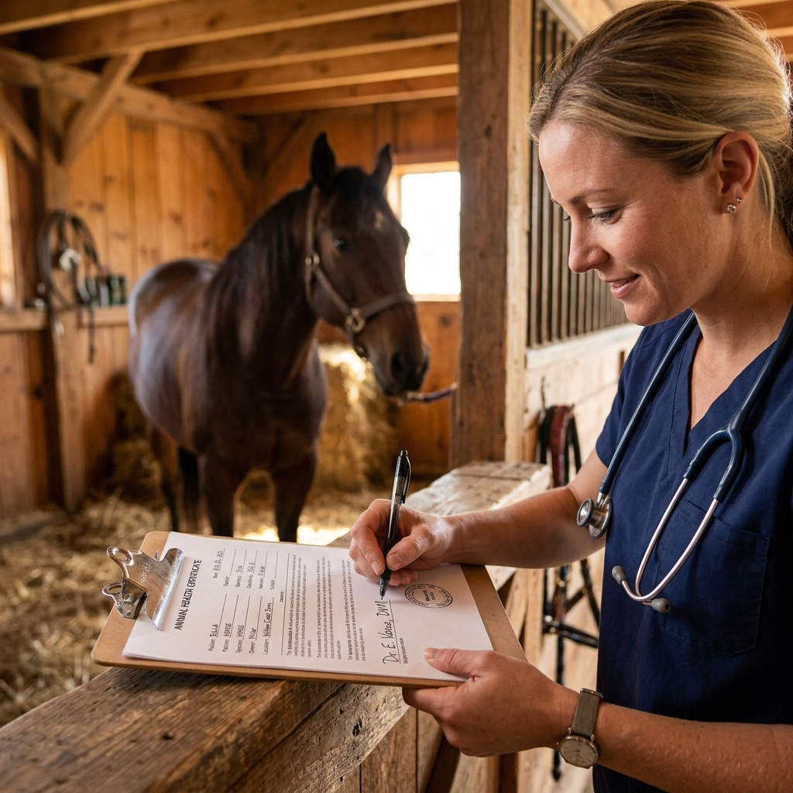
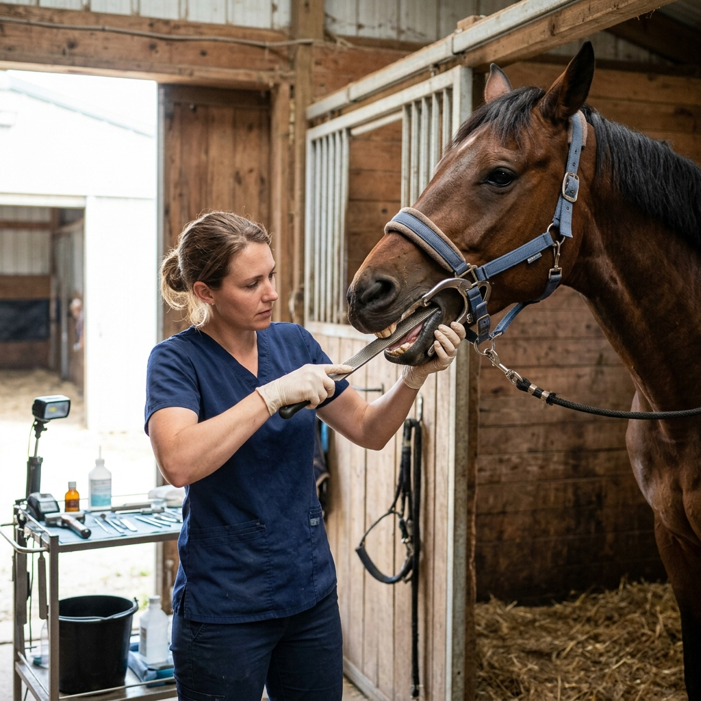
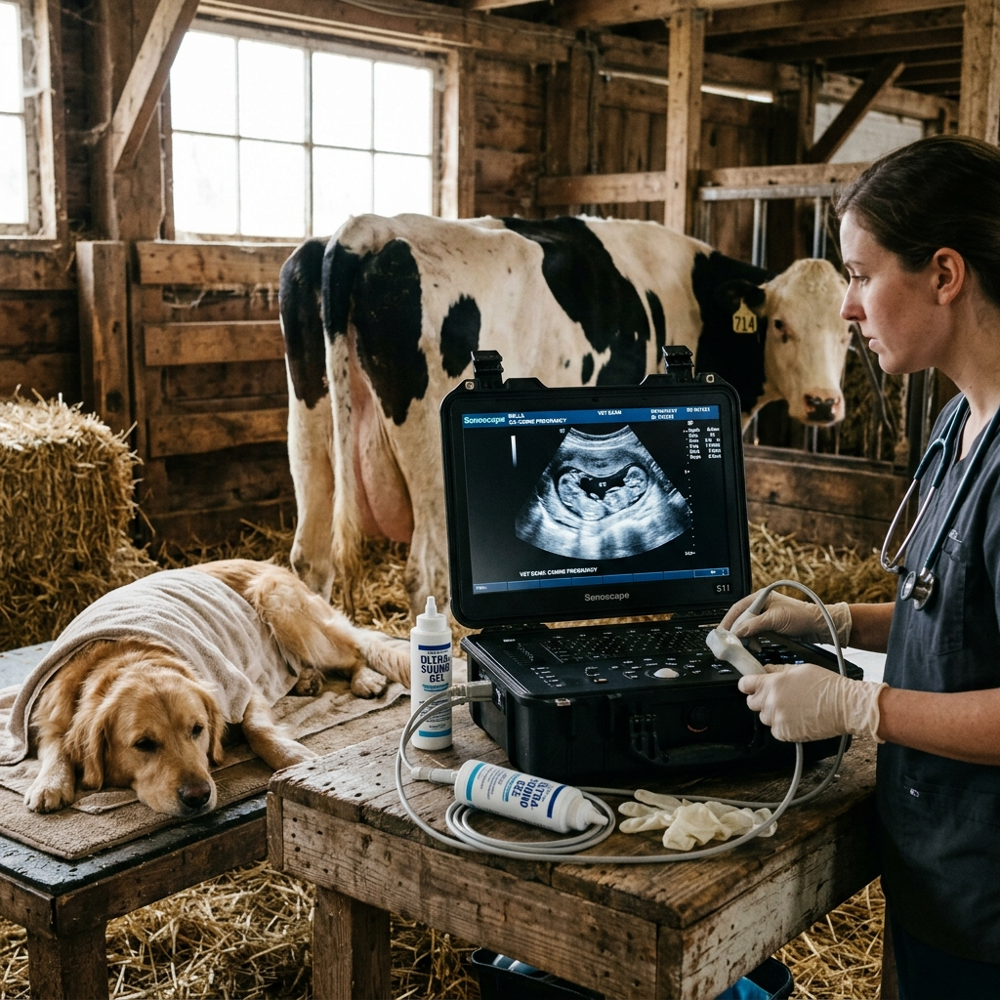
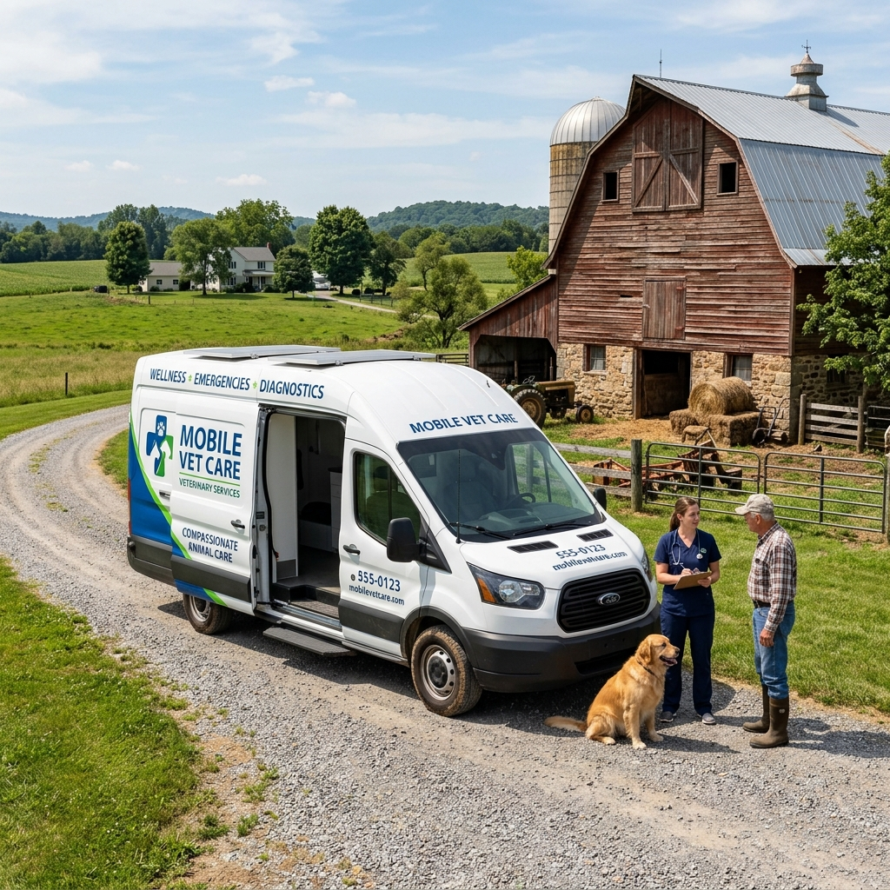
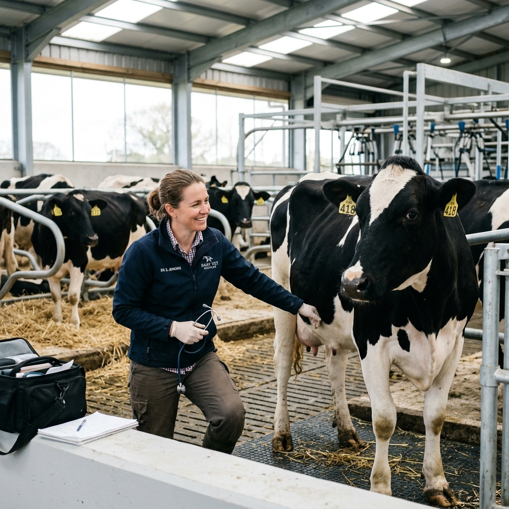
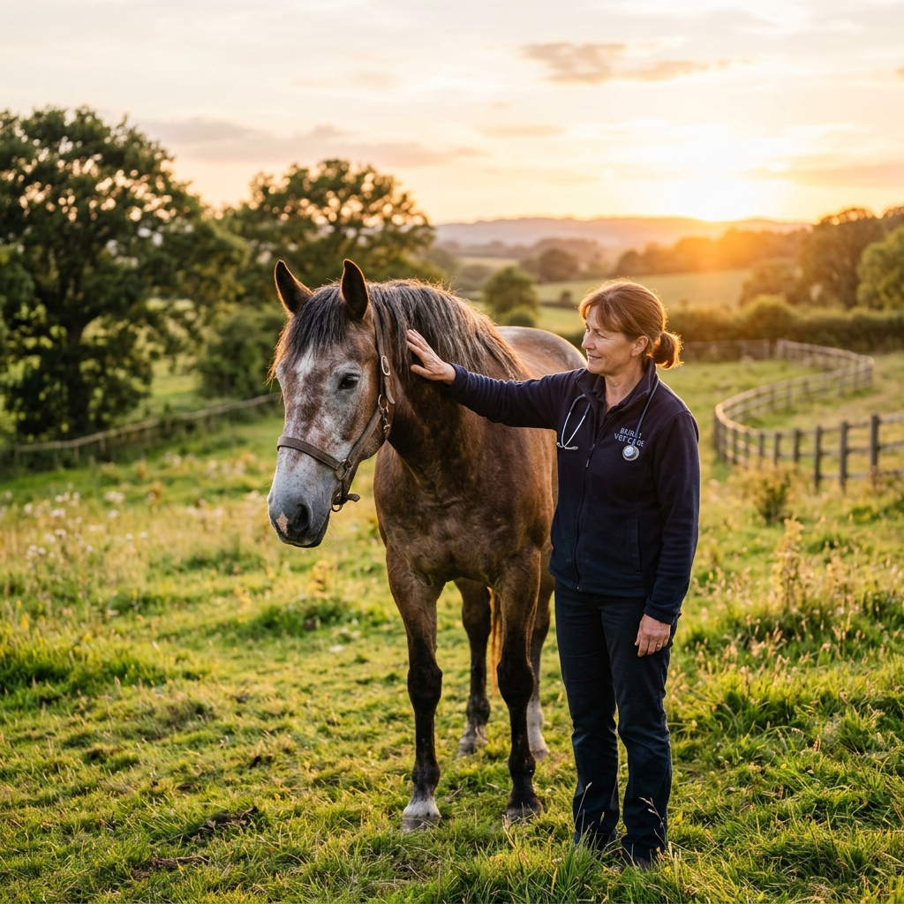
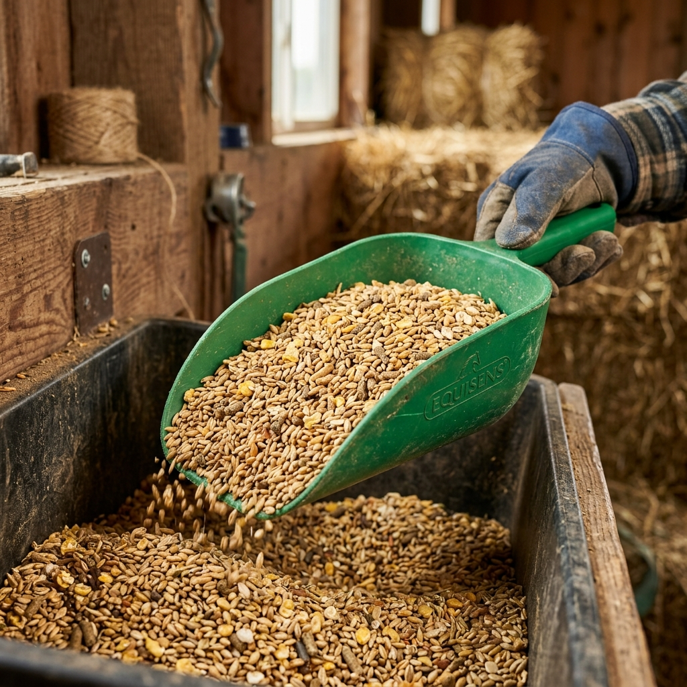

Equine Health Care
Full-service equine medicine including wellness exams, lameness diagnostics, digital radiography, and ultrasound. We handle performance horses, working horses, and beloved companions.
Livestock Veterinary
Herd health consulting, individual sick animal exams, and preventative care protocols for cattle, sheep, goats, and pigs. We help maximize the health and productivity of your herd.

Vaccinations
Core and risk-based vaccination protocols tailored specifically to your geographic location and the individual needs of your animals to protect against infectious diseases.

Health Certificates
Official Certificates of Veterinary Inspection (CVIs), Coggins testing (EIA), and required documentation for travel, shows, sales, and interstate transport.

Dental Care
Routine power floating, dental charting, extractions, and advanced dentistry for horses to ensure proper mastication, comfort, and optimal performance.

Reproductive Services
Breeding soundness exams, artificial insemination, ultrasound pregnancy diagnosis, foaling/calving assistance, and neonatal care.

Emergency & Trauma Care
24/7 round-the-clock emergency care including laceration repairs, colic treatments, ophthalmic emergencies, and critical fluid therapy administered right on your farm.

Lameness & Sports Medicine
Comprehensive lameness diagnostics, joint flexions, diagnostic nerve blocks, digital ultrasound assessment, and custom therapeutic plans to maximize athletic longevity.

Internal Medicine & Diagnostics
Advanced diagnostic procedures including mobile endoscopy, high-definition ultrasonography, radiography, and fast on-site blood chemistry diagnostics.

Geriatric & Chronic Care
Custom health plans, metabolic evaluations (Cushings/PPID), degenerative arthritis treatments, and senior wellness checks to ensure comfort for aging horses and cattle.

Biosecurity & Herd Consulting
Individualized herd health audits, vaccine scheduling, pasture stocking recommendations, parasite control management (fecal egg counts), and nutritional consulting.